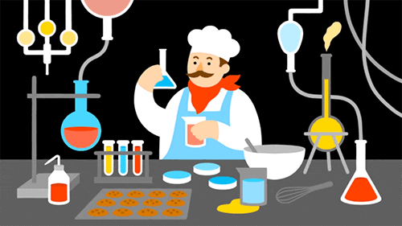
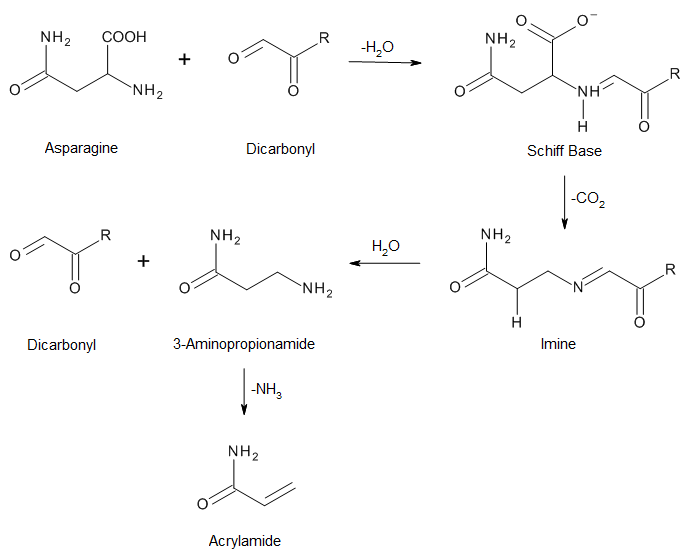

What do you think of when you hear of chemistry? If you're like many others, you may
visualize people wearing lab coats mixing different colored liquids into test tubes
associate it with food additives like aspartame or monosodium glutamate (MSG)
think back about your high school chemistry class and remember how none of it seemed to make any sense.

Based off what chemistry is commonly portrayed as, these are not unfounded conclusions! Growing up in the modern age, it is difficult to view chemistry as anything other than a collection of facts and reactions. In fact, I came to that conclusion long before I took my first chemistry class; in Mandarin, the phrase for chemistry, "fa-xue," can be translated word for word into the phrase meaning psuedoscience, also pronounced "fa-xue." It wasn't until I took my first college-level chemistry course that I learned what chemistry actually was.
Here's one of my favorite quotes, spoken by Walter White in Breaking Bad S1E1:
"You see, technically, chemistry is the study of matter, but I prefer to see it as the study of change: Electrons change their energy levels. Molecules change their bonds. Elements combine and change into compounds. But that’s all of life, right? It’s the constant, it’s the cycle. It’s solution, dissolution. Just over and over and over. It is growth, then decay, then transformation. It’s fascinating really. It’s a shame so many of us never take time to consider its implications."
Chemistry is often referred to as the "central science." The reason behind this is that the core of every scientific field is based off exploring chemical phenomena and change. Classical physics is the change of motion. Biology is the development and change of living systems. No matter what field of science you're in, chemistry will be at the center of it.

By XKCD
As this site progresses, I wish to share with you the logic behind chemistry in order to demonstrate what it is about chemistry that I find so appealing. For starters, check out the first image on the top of the page involving isooctane and oxygen. Your first thoughts are probably somewhere along the lines of "What the heck is isooctane?" and "Oxygen? Isn't that the stuff that air is made of?" The image is the combustion reaction of isooctane, which you may know of as gasoline. This "reaction" can be thought of as a chemical sentence: isooctane plus oxygen = carbon dioxide and water. That gas that you see exiting your car's tail pipes? That's carbon dioxide. That gas that you put into your car? It's just reacting with oxygen. This reaction is one of the reasons that humans have such a high carbon footprint in recent years; as we drive more, we react more isooctane and release more carbon dioxide as a byproduct! Chemical reactions like these explain why things in our world behave the way they do.
This complex looking set of funny looking hexagons is actually a chemical reaction just like the above! This reaction is known as the Maillard Reaction, and details the reaction between amino acids and sugars. In other words, it explains, chemically, why food browns! The Maillard Reaction is the reaction that gives much of food flavor, e.g Steak, cookies, bread, etc. Take another look at this reaction:

This is known as an Amadori rearrangement and is a side reaction of the Maillard. This reaction describes what happens as a byproduct of the Maillard: a molecule called acrylamide, a carcinogen, is formed. That is where the advice to avoid burnt food comes from. By ingesting the burnt part, one is ingesting acrylamide!
At it's core, chemistry is really just a set of rules that explain why things happen in the world the way that they do. The above three reactions are examples of these rules that manifest themselves on a large scale. The next few posts will start you off by explaining some of the fundamental principles of chemistry, answering questions like:
What is an atom? How do we know they exist?
What is the periodic table really?
What are electrons and protons, and why do scientists always talk about them?
Before we start, you may want to review some basic math concepts that will appear in these posts. There won't be any math for a while, but I recommend you do a bit of review before you need to: